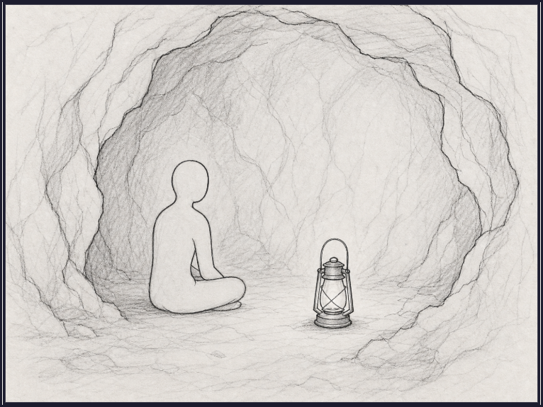
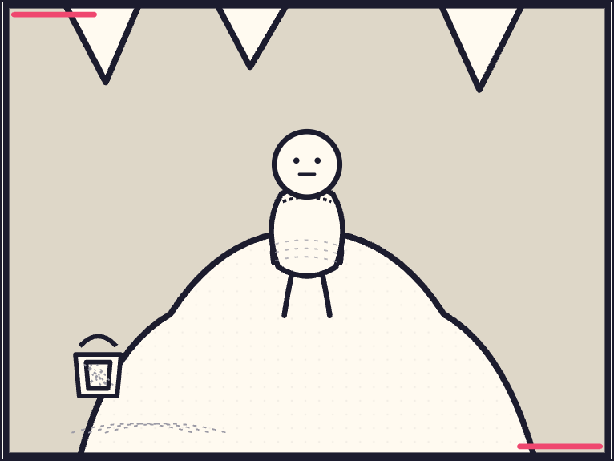
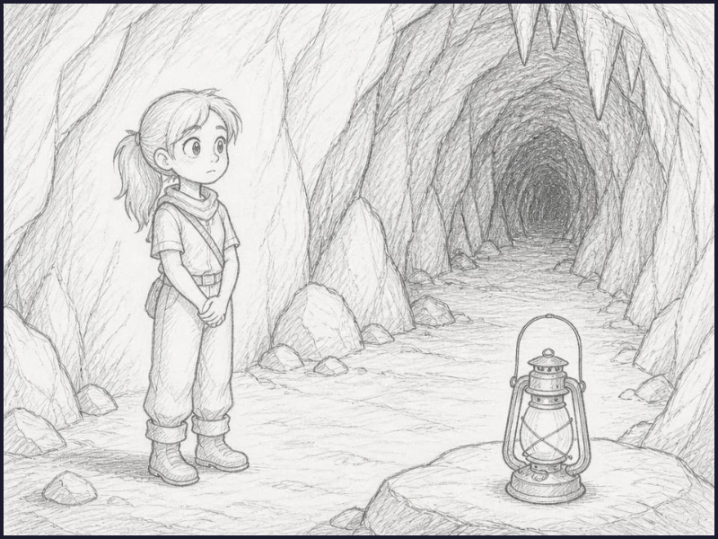

Before · image model
160.51 s
- High surface detail and atmospheric graphite rendering
- One image-model generation after validated scene extraction
- Exact dialogue would still be composed locally
MALIANG · PRODUCT-LEVEL SYNTHETIC BENCHMARK


